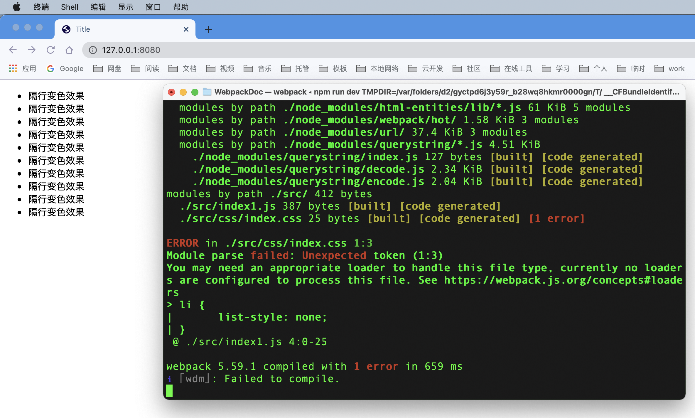

webpack 中的loader¶
什么是loader¶
loader 概述¶
在实际开发中，webpack 只能打包处理 .js 后缀结尾的模块。其他非 .js 后缀结尾的模块，webpack 默认处理不了，需要调用 loader 加载器才能正常打包，否则会报错。
loader 加载器的作用
协助 webpack 打包处理特定的文件模块。比如：
css-loader可以打包.css相关的文件less-loader可以打包处理.less相关文件babel-loader可以打包处理 webpack 无法处理的高级 js 语法
下图是loader 的调用过程：

loader 使用案例¶
css-loader使用¶
问题产生¶
在源代码 src 目录创建一个 css 目录，并创建文件 index.css，添加以下代码：
以上css代码的目的是去除html界面上列表前面的"小点"，然后在 index1.js 文件头部导入css，如下代码：
// 使用es6语法，导入jquey
import $ from "jquery";
// 导入样式（在webpack中，一切皆模块，都可以通过es6导入语法进行导入和使用）
import './css/index.css';
错误提示
当我们运行实时编译命令的时候，发现存在如下图的错误：

解决办法¶
此问题是由于webpack不能解析css文件引起，我们需要安装css-loader，让webpack能够处理css。
运行以下命令，安装处理css文件的loader：
在 webpack.config.js 的 module -> rules 数组中，添加loader规则如下：
module: { // 所有第三方模块的匹配规则
rules: [ // 文件后缀名匹配规则
{ test: /\.css$/, use: ['style-loader', 'css-loader'] }
]
}
其中，test 表示匹配的文件类型，use 表示对应要调用的 loader
注意事项
- use 数组中指定的 loader 顺序是固定的
- 多个 loader 的调用顺序是：从后往前调用
此时，我们再次运行编译命令，可以看到浏览器的样式已经实现。
less-loader¶
我们在 src/css 目录下添加 index.less 文件，添加以下样式代码：
html, body, ul{
margin: 0;
padding: 0;
li {
line-height: 30px;
padding-left: 20px;
font-size: 12px;
}
}
然后在 index1.js 文件中引入，如下代码：
此时，自动编译的命令行终端再次报错，原因是我们没有配置对应的less加载器。使用以下方式对less文件进行打包处理：
运行以下命令：
在 webpack.config.js 的 module->rules数组中，添加loader规则如下：
重新运行编译命令，终端不再报错，并已实现效果。
加载图片¶
性能优化
网页在加载图片的时候，一般是 img 标签加载远端的互联网图片，实际上图片可以转成 base64 的字符串，如果是很小的图片，我们就可以使用 base64 字符串的方式加载，减少了再一次请求互联网带来的时间延迟。这也算是前端性能优化的一个小手段。
不过，base64的字符串实际上比原图片占用的空间稍微大一点，所以大图片并不适合转成base64的图片。
接下来介绍打包处理样式表中与url路径相关的文件。
运行以下命令：
在 webpack.config.js 的 module->rules数组中，添加 loader 规则如下：
其中，在 ? 之后是loader 的参数项：
limit：用来指定图片的大小，单位是字节（byte）- 只有 <= limit 大小的图片，才会被转为 base64 格式的图片
我们接着动态地在界面上加载一张图片，打开 index.html 文件，在 <body> 节点结束前添加 img 标签，如下代码：
在 index1.js 中导入图片，得到图片文件，并加载到 img 标签，如下代码：
// 1. 导入图片，得到图片文件
import logo from './images/logo.png'
// 2. 给img标签的 src 动态赋值
$('.box').attr('src', logo)
重新编译，即可成功看到浏览器成功加载了图片，如果我们使用 console.log(logo) 将 logo 打印出来，可以看到的是base64 的字符串。
打包处理 js 文件中的高级语法¶
webpack 只能处理一部分高级的 javascript 语法。对于那些 webpack 无法处理的 js 语法，需要借助于 babel-loader 进行打包处理。
在 index1.js 中添加以下代码，webpack 无法处理并报错：
// 1. 定义名为 info 的装饰器
function info(target) {
// 2. 为目标添加静态属性 info
target.info = 'Person info'
}
// 3. 为Person 类应用 info 装饰器
@info
class Person {}
// 4. 打印 Person 的静态属性 info
console.log(Person.info)
为了解决以上问题，我们需要安装 babel-loader 相关的包，运行如下命令安装对应的依赖包：
在 webpack.config.js 的 module -> rules 数组中，添加 loader 规则如下：
// 注意，必须使用 exclude 指定排除项，因为 node_modules 目录下的第三方包不需要被打包
{ test: /\.js$/, use: 'babel-loader', exclude: /node_modules/ }
同时，在项目的根目录下，创建名为 babel.config.js 的配置文件，定义babel 的配置项如下：
module.exports = {
// 声明babel 可用插件，webpack 在调用 babel-loader 的时候，会加载 plugins 插件来使用
"plugins": [
[
"@babel/plugin-proposal-decorators",
{
"legacy": true
}
]
]
}
配置方式
babel的声明还可以使用另一种方式，在 package.json 中定义，如下代码：
重新编译，可看到代码正常运行。
总结¶
loader的工作流程如下：
- webpack 默认只能处理
.js结尾的文件，处理不了其他后缀的文件 - 由于代码中包含了
index.css这个文件，因此webpack默认处理不了 - 当webpack发现某个文件处理不了的时候，会查找
webpack.config.js这个配置文件，看module.rules数组中，是否配置了对应的loader加载器 - webpack把
index.css这个文件先转交给最后一个loader进行处理（先转交给css-loader） - 当css-loader处理完成之后，会把处理结果转交给下一个loader（转交给style-loader）
- 当style-loader处理完成之后，发现没有下一个loader了，于是就把处理的结果转交给webpack
- webpack把style-loader处理的结果合并到
/dist/bundle.js中，最终生成打包好的文件
下一步
现在你已经掌握了webpack加载器的使用，接下来让我们学习 打包构建 的相关知识。